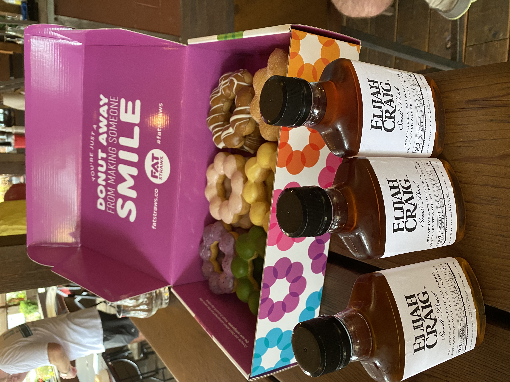
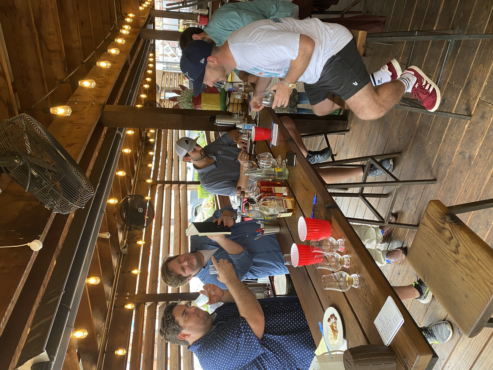

Recap: Elijah Craig Barrel Selection
Back at the end of July, the Dallas Bourbon Club and Lakewood Medallion were approached by Heaven Hill with a double pack of barrel selections: an Elijiah Craig and a Larceny single barrel. Being the wonderful partner that he is; Mark at Lakewood turned over both selections to the Dallas Bourbon Club. I was lucky enough to get invited to the Elijah Craig selection and this is how it all went down.
On a balmy Tuesday afternoon, I met up with Jason Varela, Evan Clark, Michael Belvin, Michael Langston and Austin Rodgers, the owner and proprietor of the new Alamo Club on Greenville. A summer rain had come through the night before and it was cloudy, but sticky out there. This made the Alamo Club's patio a great option...a little stickiness in the air was no match for the Swamp Cooler.
The selection kicked off around 5:15 with some tasty store picks the guys had acquired. Belvin brought some Mochi donuts (first time having one and oh my God) and we had a small chacuterie board for palate cleansing. Since we were not being hosted by a Heaven Hill brand rep, the selection was a little less formal and more member driven. Some times, it's nice not to sign through a marketing schpeel and you can just get down to business with the group. This especially rings true when it's a well known brand like Elijah Craig, "the Father of Bourbon." 
With Jason as our group director, we lined up three samples; each of them cut down to bottling proof (94 proof). We decided to keep the ages and the rickhouse locations a secret since we all knew that we would gravitate toward Deetsville warehouses. Per Jason's direction, everyone quitely worked through the samples before the opining began. We nosed them, recorded our thoughts, tasted, wrote down more notes and then finally we were ready to chat. Despite Langston, Evan, Austin and Belvin being on their first barrel selections; these guys were able to dive right in and provide some serious tasting notes.
Three whiskies were poured; from left to right we had A, B and C. Since we all nosed first, then tasted, I was ready to get started. The nose on Whiskey A was pretty unremarkable to me; muted butterscotch and toffee. Whiskey B had a very unique nose that smelled like black licorice. It was very herbal and medicinal and just like black licorice; there's nothing else like it. I had never experience that in a bourbon before so I was very intrigued. The final nose for Whiskey C was classic bourbon; leather, smoke, tobacco, and some citrus sweetness in there.
Having gone through and nosed them all, it was time for the tasting portion. I started with A and it was the most pedestrian and boring whiskey to me; just totally unremarkable. It was thin through the body and finished like getting punched with a pillow. Next up was B. For as much as I loved the unique nose on B, it sure didn't translate to a great whiskey. It had some earthy notes that I liked, but the structure and the body were not there.
While the first two bourbons failed to ignite my flavor jets; Whiskey C got those burners going. This one had the best texture of the group and did a great job balancing some of the quintessential bourbon flavors. This one had a green apple note on the finish that was out of this world to me. For me, C was the clear and obvious winner. A second taste through only cemented my position: C was the best of the trio.
 Now having gone through the line up, the debate sparked up. Some folks loved A, some folks loved C, but no one loved B. It was pretty easy to kick that one out and so that was our first out. B was a whiskey from Bardstown Rickhouse V, fourth floor. For me and Langston, Whiskey C was the real winner. But some in the group championed hard for A. Jason remained our impartial mediator and poured us a little more from the sample bottle. After taking a final pass at the last two; it was an easy decision. Whiskey C was our selection.
In a strange twist of fate, our top two whiskies were both from the famed rickhouses of Deatsville. Whiskey A was from the fourth floor of Deatsville D. Our winner was from the fourth floor of Deatsville F.
Our winner is a very tasty 94 proof bourbon that was born on 1.18.2010. It's a little older than ten years and has a great flavor with one outstanding pedigree. This is another outstanding barrel for the Dallas Bourbon Club. This is the first Heaven Hill product that our group has selected and we are incredibly excited. Our sources say to expect in October or November. I can't wait to enjoy cool weather and this Deatsville beauty!